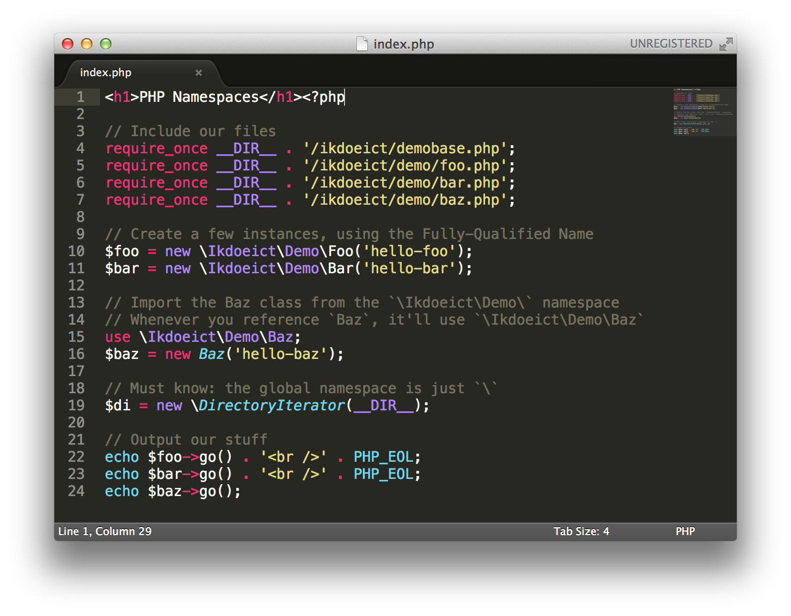
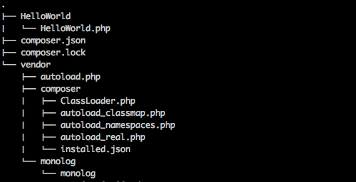

Polyfill libraries: supporting an abandoned or future PHP core feature
… (#lmgtfy)
General Libraries
The Symfony Components
Beware though!
Not all codebases are created equally! Lots of cruft out there.
Bad quality
No proper abstraction
PHP 5.* code; PHP 8 incompatible code
No documentation
…
Framework?
Framework > Library
Defines a structure to follow
Your project must follow that structure
Internally, a framework will most likely contain/use a library
Examples
Laravel
Symfony
Zend Framework
CodeIgniter
CakePHP
FuelPHP
YII 2
Phalcon
Slim
etc.
07.2 Autoloaders & Namespaces
Autoloaders (1)
An autoloader is a function that loads a PHP class that is not available in the current scope (e.g. not yet included via include or require).
The function takes one argument: the name of the requested class
Function then translates the classname to an actual file to include
Easy to write, if you keep your naming and structure consistent
You need to tell PHP to use that function for autoloading with spl_autoload_register
function simple_autoloader($class) {
include 'classes/' . $class . '.class.php';
}
spl_autoload_register('simple_autoloader');
Autoloaders (2)
Example: Twig 1.x's autoloader (stripped down)
function autoload($class) {
if (0 !== strpos($class, 'Twig_')) { //Don't interfere w other autoloaders
return;
}
$path = __DIR__ . '/' . str_replace('_', '/', $class) . '.php';
if (!file_exists($path)) return;
require $path;
}
When using Twig_Loader_Filesystem it'll include /path/to/twig/Twig/Loader/Filesystem.php
Namespaces (1)
Namespaces allow you to logically group and name your classes
No more lengthy classnames such as Swift_Encoder_Base64Encoder
… but a class Base64Encoder in the \Swift\Encoder namespace
Howto
Define a class Baz within a namespace: start with namespace Ikdoeict\Demo;
Refer to other classes of the same namespace: just by their base name
How to refer to Baz when you're outside the namespace?
By the fully qualified name: \Ikdoeict\Demo\Baz
Or: first import the namespace by use \Ikdoeict\Demo\Baz; and just use Baz after that
Namespaces (2) — Demo time!

Let's take a look at the files in assets/07/examples/namespaces/→
Define a namespace for your class at the very top of the file
namespace Ikdoeict\Demo;
class Foo { ... }
Refer to a class with its full namespace.
$foo = new \Ikdoeict\Demo\Foo('hello-foo');
If you don't use the full namespace, PHP will look in the current active namespace and the – via use – imported namespaces.
namespace Ikdoeict\Demo;
class Bar extends Foo { ... } // = extends Ikdoeict\Demo\Foo
use \Ikdoeict\Demo\Baz;
$baz = new Baz('hello-baz'); // = \Ikdoeict\Demo\Baz
The global namespace is \
$di = new \DirectoryIterator(__DIR__);
PSR-0
PSR-0 is “a standard describing mandatory requirements for autoloader interoperability”
Defines how to namespace your code: \<VendorName>\(<Namespace>\)*<ClassName>
Defines how that namespace translates to an organization on disk /path/to/project/vendor/Vendorname/Namespace/ClassName.php
In other words: Adhering to this folder structure makes your library play nice with the PSR-0 autoloader.
PSR-4
PSR-4 is “a specification for autoloading classes from file paths”
PSR-4 is the relative path version of PSR-0
Affords a more concise folder structure. Example:
Given: a name space prefix Acme\Log\Writer
Given: a base dir ./acme-log-writer/lib/
Class \Acme\Log\Writer\File_Writer → path ./acme-log-writer/lib/File_Writer.php
PSR-0 paths are PSR-4 compliant
07.3 Managing Libraries with Composer

Composer
Composer is a tool for dependency management in PHP. It allows you to declare the dependent libraries your project needs and it will install them in your project for you.
Roughly translated: this tool will save you lots of headaches
Just tell composer which package and which version (specific, or “the latest”) of a library you need and it will install/update it for you
<?php
// require composer autoloader
require_once __DIR__ . '/vendor/autoload.php';
// import the Intervention Image Manager Class
use Intervention\Image\ImageManagerStatic as Image;
// open an image file
$image = Image::make('assets/procla_ict_oct_2022.jpg');
// resize the image to a width of 1024 pixels and maintain aspect ratio
$image->resize(1024, null, function ($constraint) {
$constraint->aspectRatio();
});
// insert a watermark
$image->insert('assets/odisee.png', 'bottom-right');
// finally we save the image as a new file
$image->save('output/procla_ict_oct_2022_watermark.jpg');
?>
<a href="output/procla_ict_oct_2022_watermark.jpg" target="_blank">Click here for the result</a>
About the Lock File
composer.lock has precedence over composer.json.
When running composer install it will look for composer.lock. If not found, it will fall back to composer.json.
Put Differently: It locks the project to those specific versions
Successive runs of composer install will use the lock file, even if you've changed composer.json
The lock file ensures all devs/servers use the same dependency versions
Just clone the source and run composer install
Updating packages
Automatic:
Run composer require vendor/package newversion on the CLI
Manual:
Update composer.json
Run composer update
In both cases a new composer.lock file will be generated.
When stuff is verified to still work, commit the lock file into version control